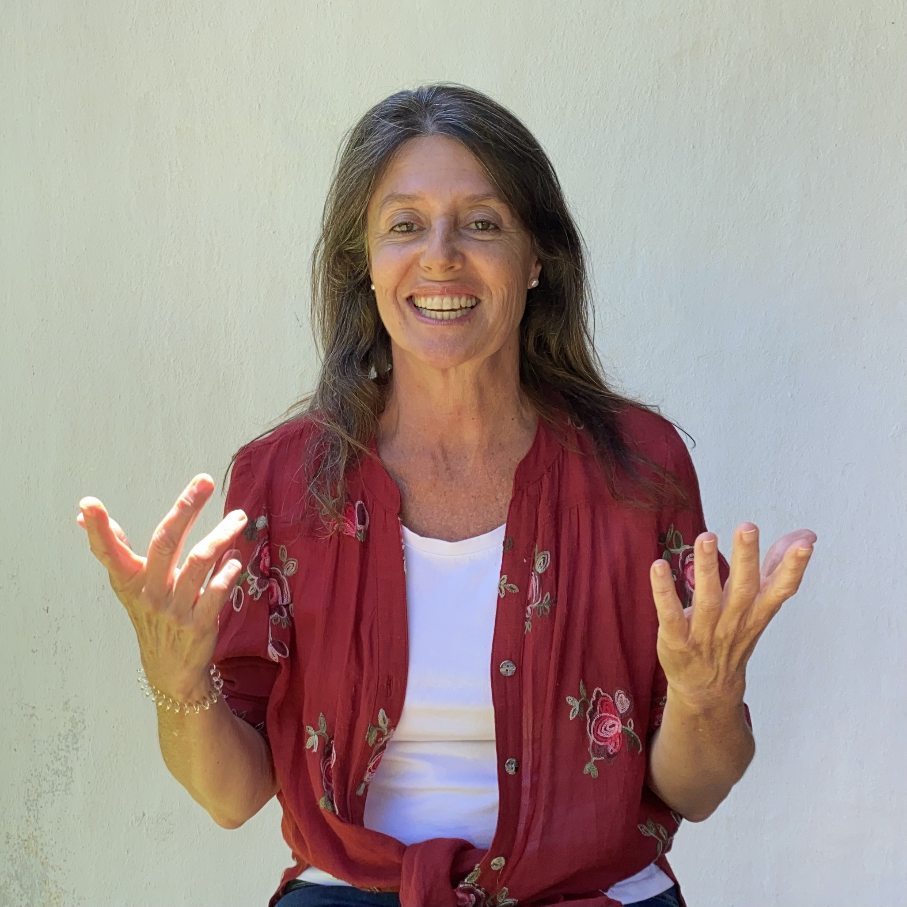

DISEÑAR APRENDIZAJE
CON IA
Transformá investigaciones, borradores y contenidos en experiencias con valor pedagógico real.
"No enseño herramientas de IA. Enseño a diseñar experiencias de aprendizaje sin perder tu propio criterio pedagógico."
— Eleonora Segura

ELEONORA SEGURA
M.Ed. Harvard • Lic. en Sistemas • Prof. UCA
¿Qué da por obvio este texto?
"¿Reescribirlo para un perfil no técnico manteniendo la tensión central?"
¿PARA QUIÉN ES ESTE TALLER?
Para docentes, facilitadores, diseñadores de contenido y profesionales de la formación que ya usan IA —o quieren empezar— y sienten que algo falta.
No suena a vos
Sentís que el resultado que te devuelve la herramienta es genérico y pierde tu tono y estilo propio.
Dudas de criterio
No sabes con certeza cuándo confiar en lo que propone la IA y cuándo corregirlo.
Aceleración rápida
Acelerás la producción cuando lo que realmente necesitás es detenerte a diseñar con intención.
LO QUE VAS A CONSTRUIR
Un fin de semana. Cuatro módulos. Tu propio tema como laboratorio de trabajo.
Pensar con IA, no correr detrás de ella
Qué hace realmente la IA, errores comunes iniciales y cómo estructurar un pedido que devuelva valor pedagógico utilizable.
Diseñar con IA desde lo pedagógico
De la idea a la estructura real. Actividades, secuencias y nombres de proyectos trabajando con tu material directo.
Refinar hasta que sea tuyo
El primer resultado nunca es el definitivo. Criterios de iteración y estilo para conservar solo lo que aporta valor.
Decidir qué IA usar y cuándo NO usarla
Comparativa de herramientas, límites éticos y la pregunta central: el "cuándo no" es tan importante como el "cómo sí".
ELEONORA SEGURA
- 🎓 Licenciada en Sistemas.
- 🏛️ M.Ed. Tecnología Educativa, Harvard.
- 💼 30 años en formación y desarrollo.
- 📚 Prof. Aprendizaje Digital en UCA.
QUIERO SUMARME A LA LISTA DE INTERÉS
El taller aún no tiene fecha confirmada. Dejá tu correo para enterarte antes que nadie cuando abramos la inscripción.
¡Anotado con éxito!
Te avisaremos con prioridad apenas confirmemos la fecha.